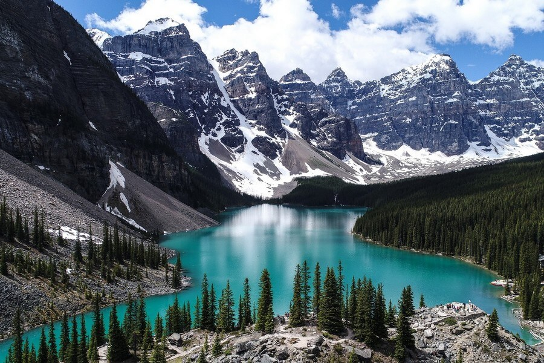
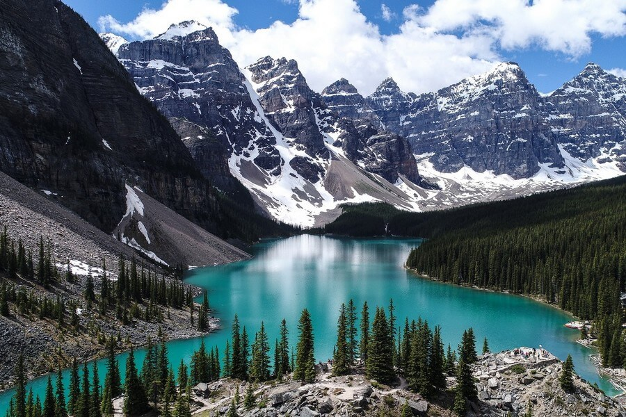

Скалистые горы
Здесь, в центре Канады, можно увидеть захватывающие виды, которые ни с чем не сравнятся. Великолепные горные хребты и бирюзовые озера оставят вас в восторге.
Скалистые горы простираются на тысячи километров. В национальных парках Банф и Джаспер вас ждут маршруты для пеших прогулок, альпинизма и отдыха на природе.